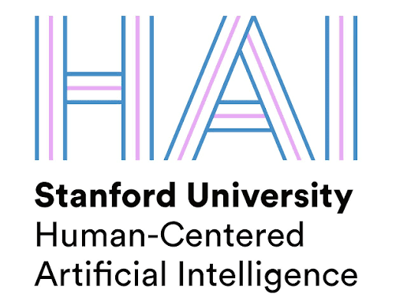
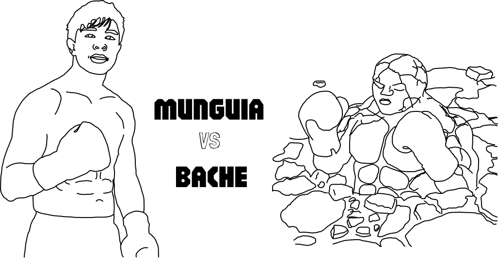
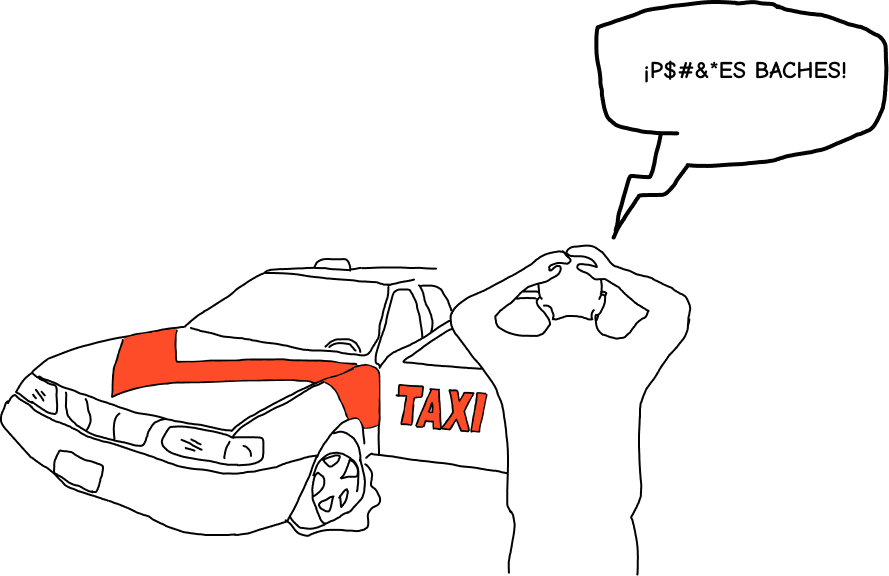
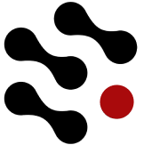

Lab for Emerging Intelligence, UC San Diego
Student Developer · August 2026 - present
Working on using ideas from program synthesis to develop learned libraries for agent skills. Advised by Prof. Ramamohan Paturi.
My research so far has been quite eclectic, but they all tie back to my interest in understanding human behavior, and how we might be able to synthesize it into machinery.
Student Developer · August 2026 - present
Working on using ideas from program synthesis to develop learned libraries for agent skills. Advised by Prof. Ramamohan Paturi.

Digital Economy Lab, Stanford University · 2024 - present
Developed an application to track participant usage across applications, to evaluate the true economic impact of digital goods.
Developer · 2024 - present
A site I developed with the hope of maintaining a database with all of Tijuana's potholes, and all progress to mend them.



2025 · Point-of-care testing for neurological diseases, $35,000 raised in non-dilutive funding.
2024 · Started a club focused on informing students on topics in venture capital. Held panels with multiple venture capitalists, including Mike Maples from Floodgate.